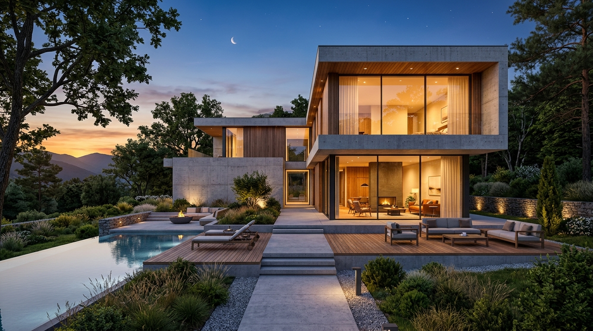

Spatial Intelligence
Begin with natural lifestyle questions, lighting needs, and layout choices rather than generic checkboxes.
WONACRE pairs architectural spatial thinking with conversational AI intelligence to help people discover homes that genuinely fit their lives.
Sultan leads WONACRE with a dedication to architectural clarity, honest property dossiers, and thoughtful spatial discovery across India's vibrant metropolises.
WONACRE brings residential and commercial discovery into one straightforward, transparent journey.
Visitors can explore vetted inventory, study acoustic ratings, orientation and floor layouts, and consult conversational intelligence in plain everyday language.
Explore active portfolio ↗
Begin with natural lifestyle questions, lighting needs, and layout choices rather than generic checkboxes.
Full access to authenticated floor plans, construction status, acoustic ratings, and high-resolution photo dossiers.
Connect directly with architectural advisors for private walk-throughs and customized consultations.